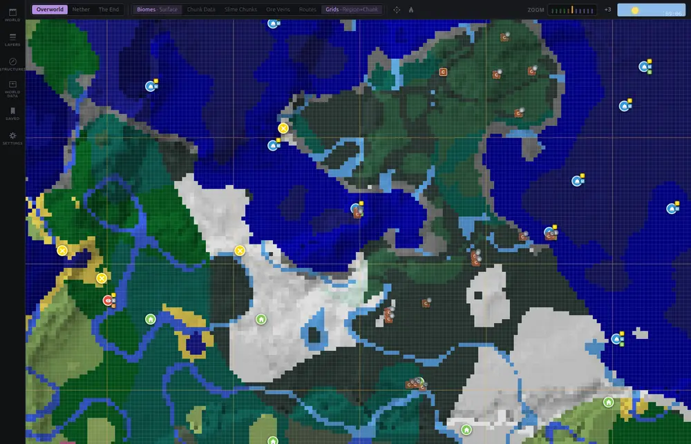
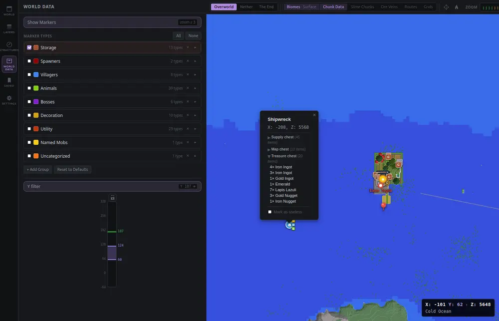
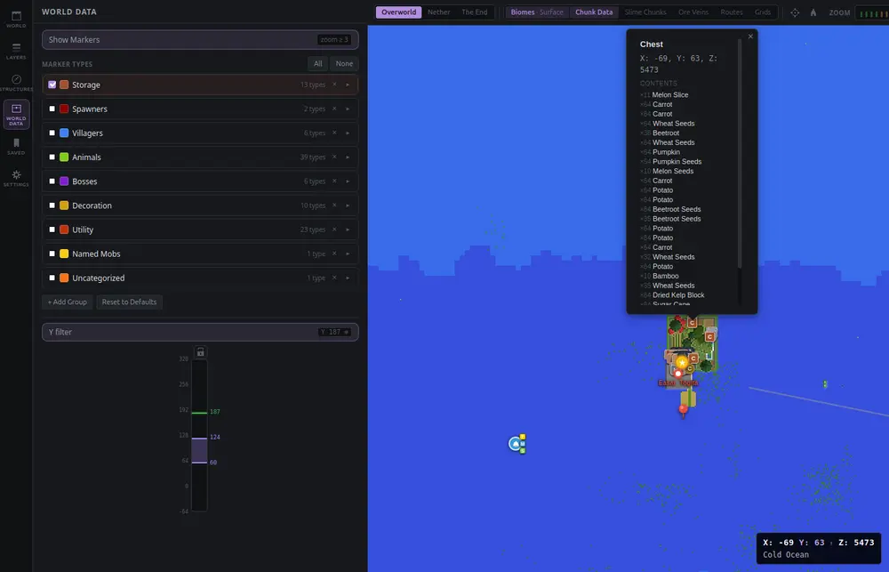
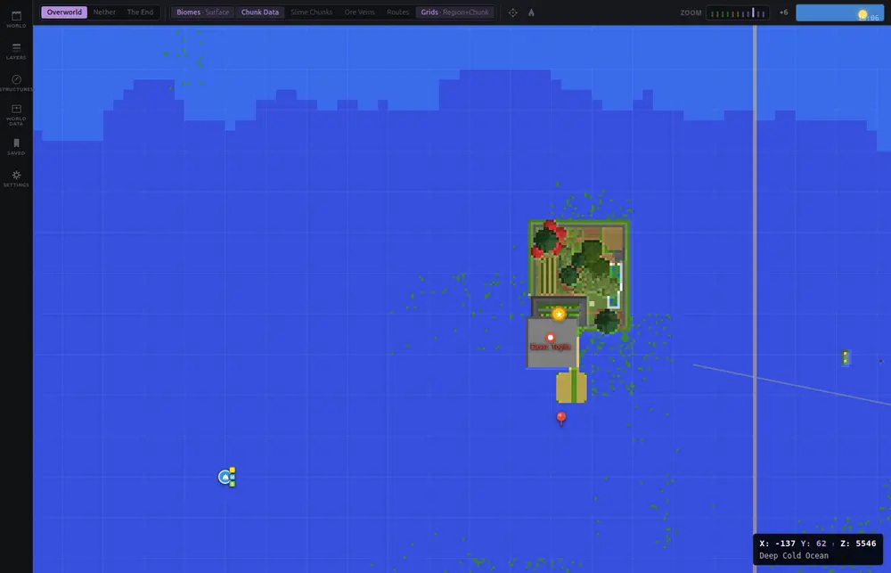
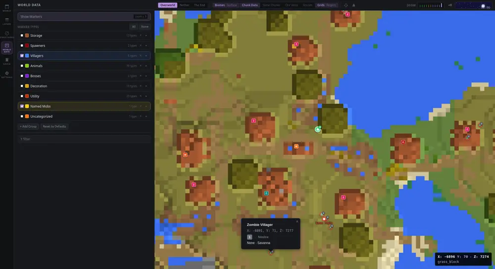
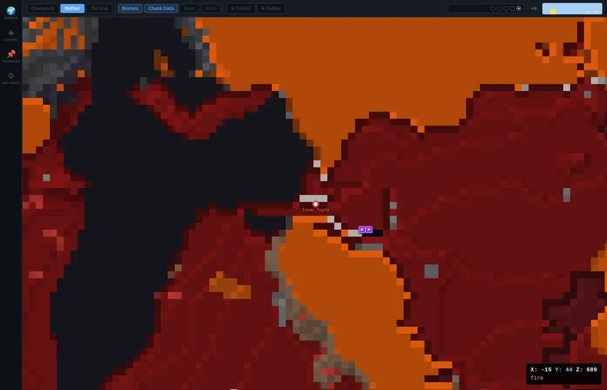
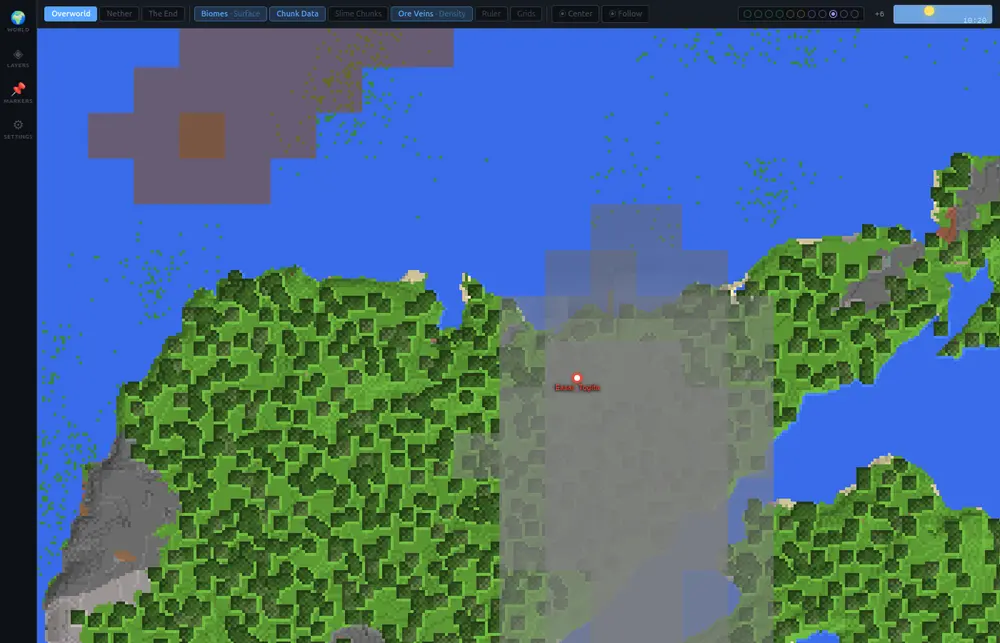
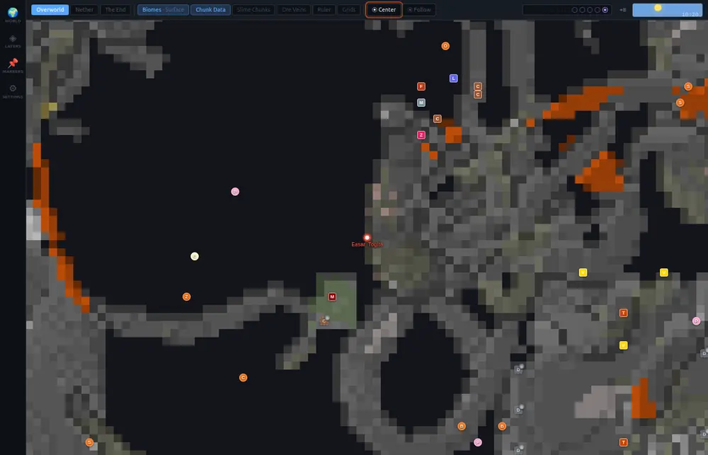
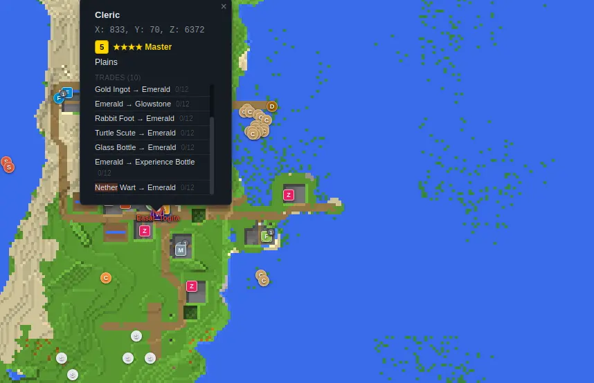

Your Minecraft world,
mapped in full.
It doesn't stop at the map. Every chest and what's in it, every villager's trades, every structure your seed will ever generate — pulled straight from the world files and laid out together. More of your own save, at once, than you've ever actually seen.

The living world, not just its skin.
Open a save and it draws what's there — the real blocks you placed, the biomes and structures from the seed †, the ore veins, the caves. Then it goes further, into every chest, every villager, every structure actually placed in your world:
Every chest, and what's in it
Spawners, signs, banners, beehives, brewing stands — all of it, grouped and searchable.
Every villager, and their trades
Mobs, item frames, minecarts, bosses — placed exactly where they stand, profession and level included.
Beds, workstations, bells
The bones of a settlement, straight off the save — not inferred, not guessed.
The full seed engine †
Biomes, structures, slime chunks, ore veins, cave mode, relief — on Java and Bedrock both, current through Minecraft 26.3's dappled forests and abandoned camps.
What it actually renders.
Real screenshots — actual worlds, actual loot. No mockups, nothing staged. Click any shot for full resolution.
{kind=link}

{kind=link}

{kind=link}

{kind=link}

{kind=link}

{kind=link}

{kind=link}
{kind=link}

{kind=link}

Explore a real world, right now, no install.
These are full static exports of actual saves — the same tile rendering and data the desktop app produces, running entirely client-side in your browser. Pan and zoom a real world before you download anything.
- ChickenfeetSmall, early-game save — quick to load, easy to get your bearings
- Bad LandA long-running survival world — 6,300+ structures, 28,000+ chests, and 690+ villagers found — what the map looks like once you've actually lived in it
More worlds get added here as they're exported — see the full list. Nothing here is required for the app itself to work.
Built on other people's hard-won work.
Sojourner didn't solve Java's world generation or Bedrock's storage format from scratch — these projects already had, for free, and let anyone build on top. That's the only reason any of this exists.
- † cubiomes (Cubitect, MIT) — the actual Java world-generation math. Every biome, structure, and seed calculation marked † on this page runs through it, via the xpple/cubiomes fork this app is built on. It only knows Java's rules, though — Bedrock generates worlds with different code entirely. On a Java save that means everything † lines up exactly; opened on a Bedrock save, the biome map and predicted structure locations are Sojourner's best guess using Java's math, not the real Bedrock answer. Ore veins, cave mode, and everything else read straight off your save are unaffected either way. License
- ‡ LevelDB (Google, BSD-3-Clause) — the database format Bedrock worlds are stored in, and the read path marked ‡ on this page runs through it, via the Mojang/leveldb fork this app is built on. Without it there's no Bedrock support at all. License
- Snappy (Google, BSD-3-Clause) — the compression LevelDB ‡ runs on. License
- Leaflet (BSD-2-Clause) — the map engine under every pan and zoom, including the live demo above. License
- Tauri (MIT / Apache-2.0) — the desktop shell that makes a small, fast native app possible. MIT · Apache-2.0
Get the current build.
Free to download, no account required.
- Linux .deb .rpm
- Windows .exe — installer
- macOS not yet — see note below
- Source Repository Build from source
The Windows and Linux downloads above are plain installers — same as installing any other app, nothing extra to set up. This reads your world files directly, so back up your saves before pointing it at anything you'd miss. It's early-stage software — expect some rough edges. Found a bug? Open an issue.
No ready-to-run Mac download yet — getting one running today means building it yourself, which needs developer tools (Xcode, Node, Rust) installed first. If that's not something you're set up to do, it's completely fine to just wait; that's not a step regular players should feel like they need to take. Instructions are there for anyone who wants to anyway.